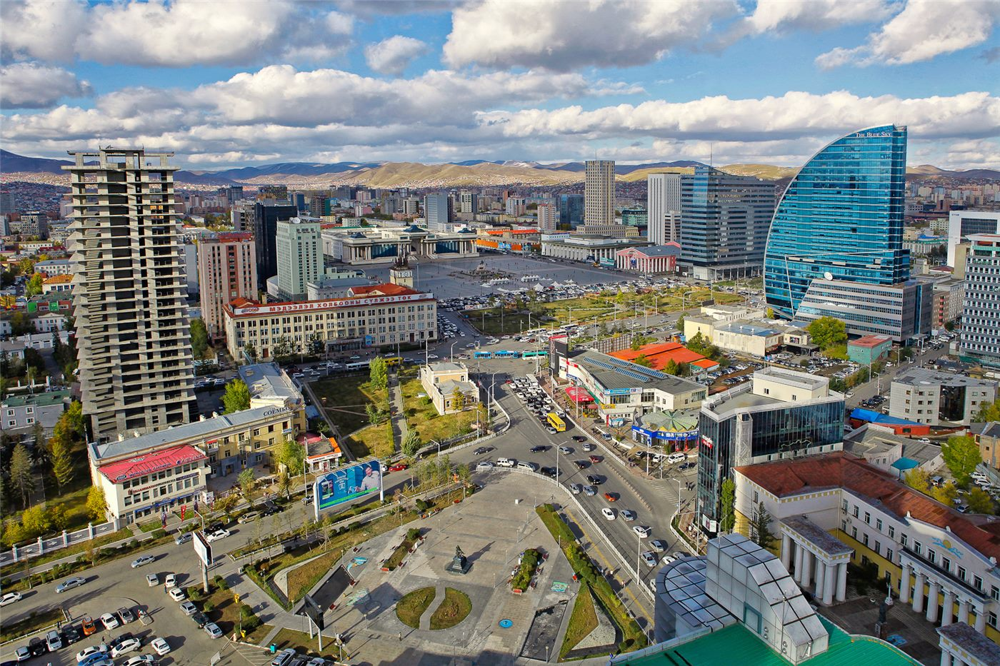

시진핑 주석, 키르기스스탄 매체에 서명 기고… 중앙아시아 협력 의제 제시
시진핑 중국 국가주석이 키르기스스탄 매체에 서명 기고문을 실었다. 국빈 방문이나 다자 회의를 앞두고 현지 매체에 기고하는 것은 중국 외교의 정형화된 형식으로, 이번 글에는 교통 연결과 무역 결제, 인적 교류가 의제로 담겼다.
조계현 기자 · 2026.09.01
橋중국

중국 국가주석이 방문국 매체에 서명 기고문을 게재하는 것은 정상 외교의 관례적 절차 가운데 하나다. 방문 일정에 앞서 양국 관계의 역사적 서술과 향후 협력 항목을 미리 제시하는 기능을 한다.
광고 문의 · 300×250이번 기고문은 키르기스스탄과의 협력 항목으로 교통 인프라 연결, 무역 규모 확대, 에너지와 광물 자원 개발, 인적 교류를 열거한 것으로 전해졌다. 중앙아시아 국가들과의 관계에서 반복적으로 등장해 온 항목들이다.
중앙아시아 회랑의 셈법
중국과 키르기스스탄, 우즈베키스탄을 잇는 철도 건설은 오랜 논의 끝에 착공 단계에 들어섰다. 이 노선이 완성되면 중국에서 중앙아시아를 거쳐 서아시아와 유럽으로 향하는 화물이 기존 카자흐스탄 경유 노선 외에 두 번째 통로를 갖게 된다.
다만 산악 지형과 궤간 차이, 공사비 분담은 여전히 과제다. 노선의 상당 구간이 해발 3000미터 안팎을 지나며, 구소련 광궤와 중국 표준궤의 접속 방식이 물류 효율을 좌우한다.
지역이 놓인 조건
중앙아시아 국가들은 러시아, 중국, 튀르키예, 유럽연합과 각각 관계를 유지하며 균형을 잡는 외교를 펴 왔다. 어느 한 방향에 과도하게 기울지 않는 것이 이들 국가의 오랜 전략이다. 중국의 협력 제안 역시 이 구도 안에서 수용되고 조정된다.
華橋時報는 이 사안을 특정국의 영향력 확대라는 틀보다, 내륙국들이 어떤 조건에서 어떤 통로를 선택하는가라는 관점에서 전한다. 판단의 재료를 제시하고 결론은 독자에게 맡긴다.
출처·참고 (사실 확인용 — 본문은 직접 재작성)
· 环球网 2026-08-28
· 环球网 2026-08-28